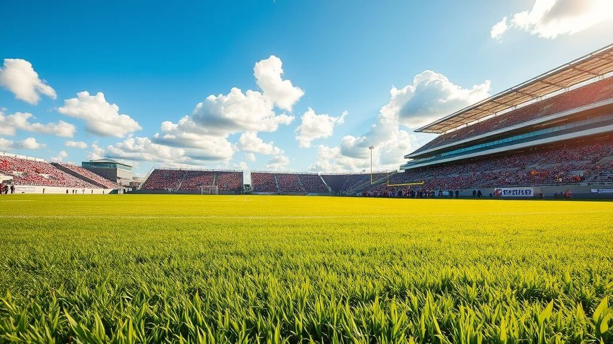

Fantasy Football
Step onto the digital pitch with Fantasy Football, where strategy, skill, and passion collide. Build your ultimate team, manage transfers, and dominate leagues by outthinking your rivals. From precision passes to thrilling goals, experience the beautiful game in a whole new way. This isn’t just fantasy—it’s football at its finest.

Why Fantasy Football is a Game-Changer
Fantasy football transforms how you follow the sport. Select top players from major leagues, form a dream lineup, and compete against fans worldwide. Whether it’s the Premier League, La Liga, or international tournaments, every match becomes a thrilling opportunity to shine.
Our platform offers advanced player stats, live match tracking, and instant updates to refine your tactics. It’s not just a game; it’s your chance to become the ultimate football strategist.
Join the ActionMaster the Art of Strategy
In Fantasy Football, success isn’t left to chance—it’s earned through skill and careful planning. From choosing a balanced squad to analyzing player form and fixtures, your decisions shape your journey to victory.
It’s more than just picking players. It’s about reading the game, predicting outcomes, and always staying a step ahead. Can you outmaneuver your rivals and claim the top spot?
Fantasy Football Formats
Dive into different formats and find the one that suits your style:
Classic: Form a squad within a set budget and compete for points based on players’ real-life performances.
Head-to-Head: Face off against another manager each week, scoring points in categories like goals, assists, and clean sheets.
Daily Fantasy: Create a team for single matchdays and earn rewards quickly without long-term commitments.
With custom leagues, knockout tournaments, and weekly challenges, there’s always a format to keep you engaged.
Pro Tips for Fantasy Football
Elevate your game with these expert tips:
- Study Fixtures: Look ahead at team schedules to plan your transfers and captain choices.
- Spread the Risk: Avoid overloading your team with players from the same club.
- Track Injuries: Stay updated on player fitness to avoid unnecessary losses.
- Utilize Boosters: Use tools like Triple Captain or Bench Boost to maximize your points during key matchweeks.
Getting Started with Fantasy Football
Build Your Team
Pick your squad from top players worldwide, keeping an eye on your budget.
Analyze Performances
Dive deep into stats to make informed decisions.
Track Live Matches
Monitor games in real time and make necessary adjustments to your lineup.
Compete and Triumph
Join leagues, strategize, and aim for glory as you climb the ranks.
Fantasy Football Rules
1. Team Formation
To participate in fantasy football, you need to assemble a squad of players from real-life teams. A balanced lineup ensures your team performs well across all aspects of the game:
- 1 Goalkeeper: A crucial last line of defense, excelling in saves and clean sheets.
- 3-5 Defenders: Players who contribute to clean sheets, tackles, and even goals or assists.
- 3-5 Midfielders: The backbone of the team, involved in both attacking and defensive plays.
- 1-3 Forwards: Goal-scoring machines leading the attack and earning you points.
- Bench Players: Substitutes who can step in for rotations or strategic changes.
2. Scoring System
Points are awarded based on the real-life performances of your players. Here’s how you can score:
-
Offensive Points:
- 5 points for each goal scored by a forward or midfielder.
- 6 points for each goal scored by a defender or goalkeeper.
- 3 points for each assist.
- 1 point for each successful key pass.
-
Defensive Points:
- 4 points for a clean sheet (goalkeeper or defender).
- 2 points for every 3 saves by a goalkeeper.
- 1 point for a successful tackle or interception.
-
Teamwork Points:
- 2 points for playing a full match (90 minutes).
- Bonus points for being the match MVP (based on league stats).
-
Penalties:
- -1 point for each yellow card.
- -3 points for a red card.
- -2 points for an own goal.
3. Captain and Vice-Captain
Selecting your captain and vice-captain is critical for maximizing your points. The captain earns 2x points, while the vice-captain earns 1.5x points. Choose wisely, considering player form, fixtures, and their likelihood of a standout performance.
4. Substitutions and Transfers
You can make substitutions before the match starts, allowing you to replace players who might not play or are facing tough opposition. Some leagues also allow limited transfers between game weeks. Use these strategically to enhance your team’s performance and outplay your rivals.